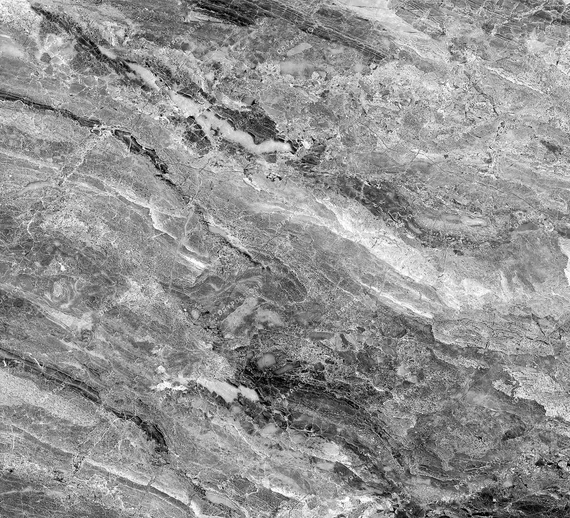
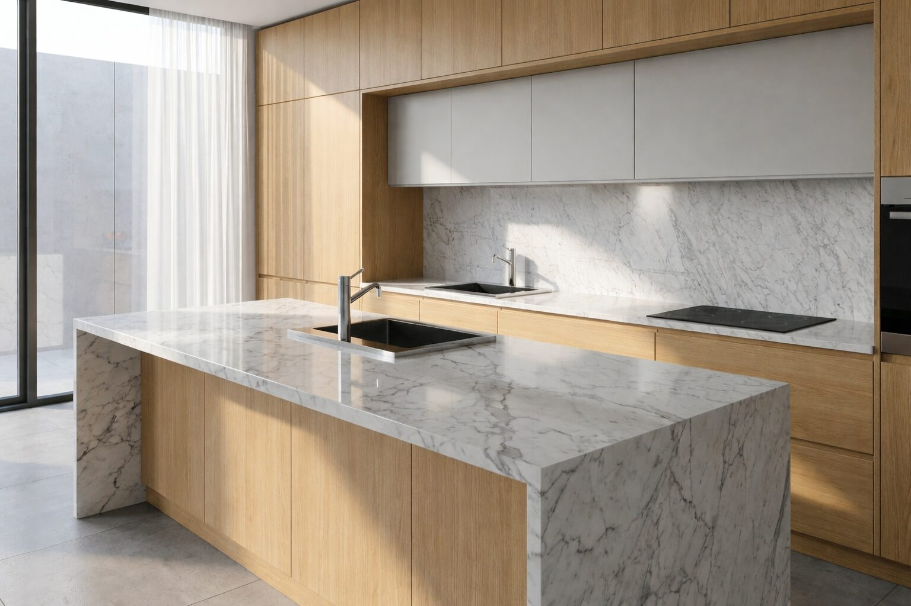
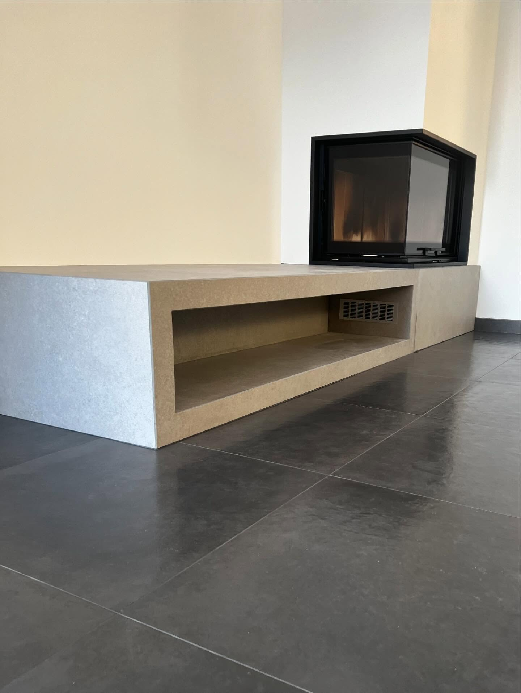
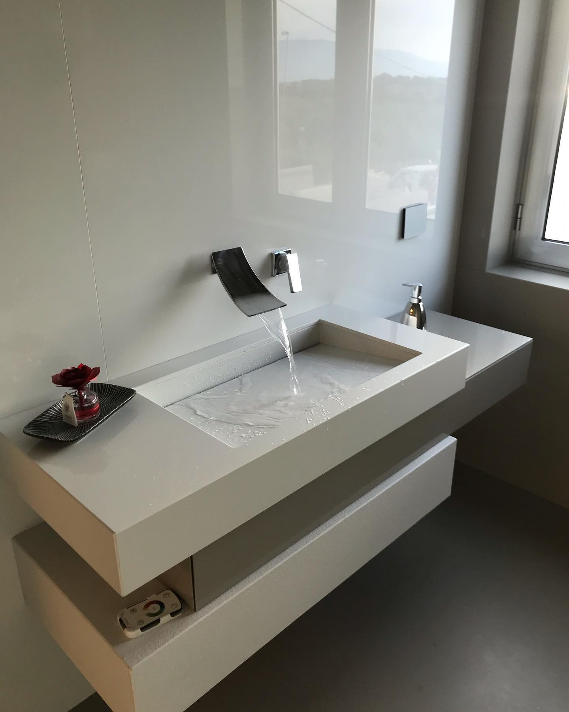
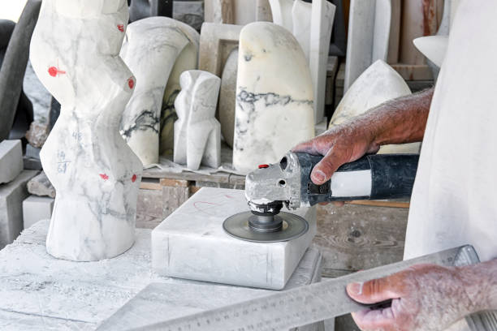
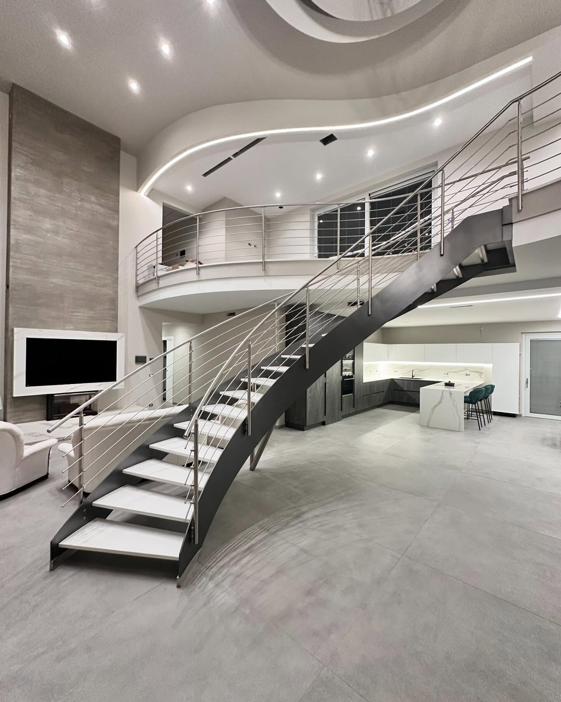

Ogni lastra racchiude una storia fatta di natura, tempo e maestria.
Selezioniamo e lavoriamo il marmo con cura per trasformarlo in qualcosa di unico.

Dalle superfici più classiche alle soluzioni più moderne, firmiamo ogni progetto con carattere, eleganza e valore.
Materia autentica, lavorazioni precise e attenzione per ogni dettaglio.
Scegliamo materiale di qualità, valorizzando ogni venatura e caratteristica naturale.
Ogni dettaglio viene lavorato con cura per ottenere risultati precisi ed eleganti.
Esperienza e attenzione accompagnano ogni fase della lavorazione.
Rispettiamo la materia e riduciamo gli sprechi durante ogni lavorazione.

LS denimar nasce dalla passione per il marmo e dalla volontà di trasformare una materia naturale in progetti unici e senza tempo.
Uniamo esperienza artigianale, precisione e attenzione ai dettagli per accompagnare ogni progetto della scelta del materiale alla realizzazione finale.
Scopri di piùMateria e deisgn si incontrano in spazi unici, realizzati su misura.

Interni in marmo

Superfici su misura

Lavorazioni artigianali

Soluzioni personalizzate